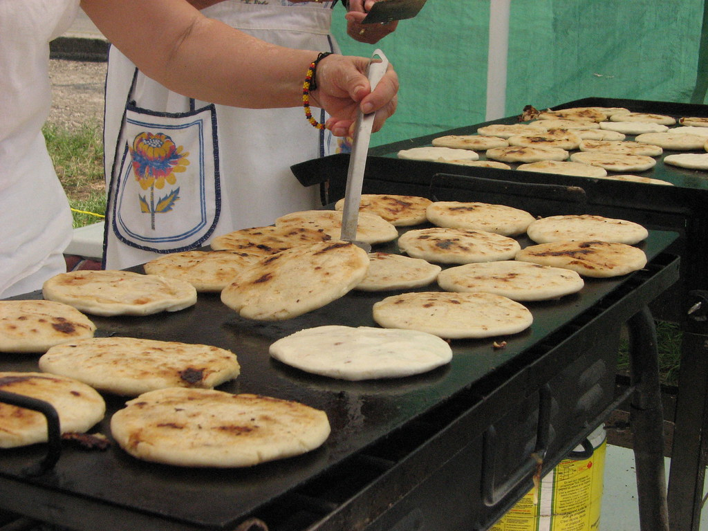

Welcome!
Here you'll find a guide to salvadorean cuisine for those that are not familiar. You'll be able to learn more about Salvadorean food and recipes. El Salvador is located in a tropical region with a variety of tropical flavors and ingridients.